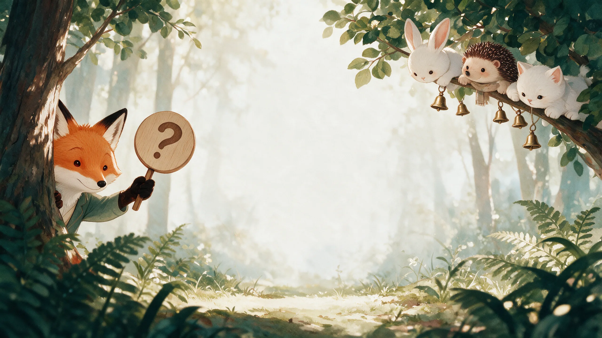
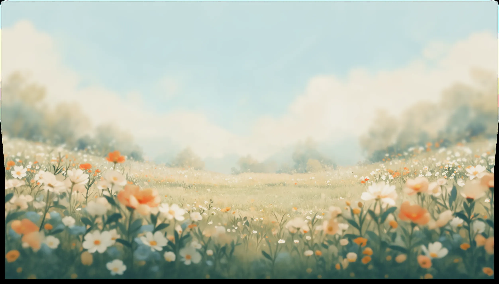
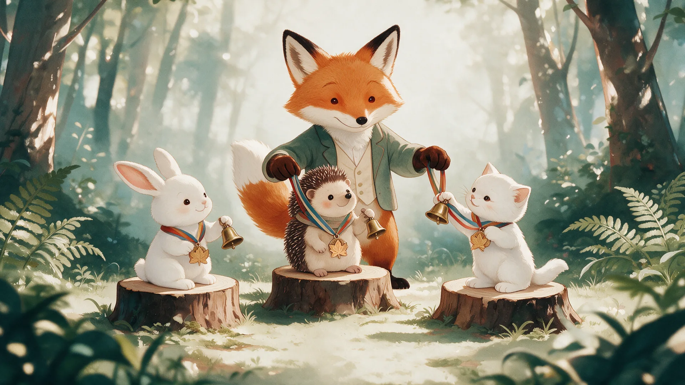

ВиКтоРиНа
Проверьте свои знания и откройте новые факты о жизни и творчестве Петра Ильича Чайковского

Кто написал музыку для балета «Щелкунчик»?

Вернуться в меню
Ты угадал 5 из 6! Лиса вручает тебе медаль знатока